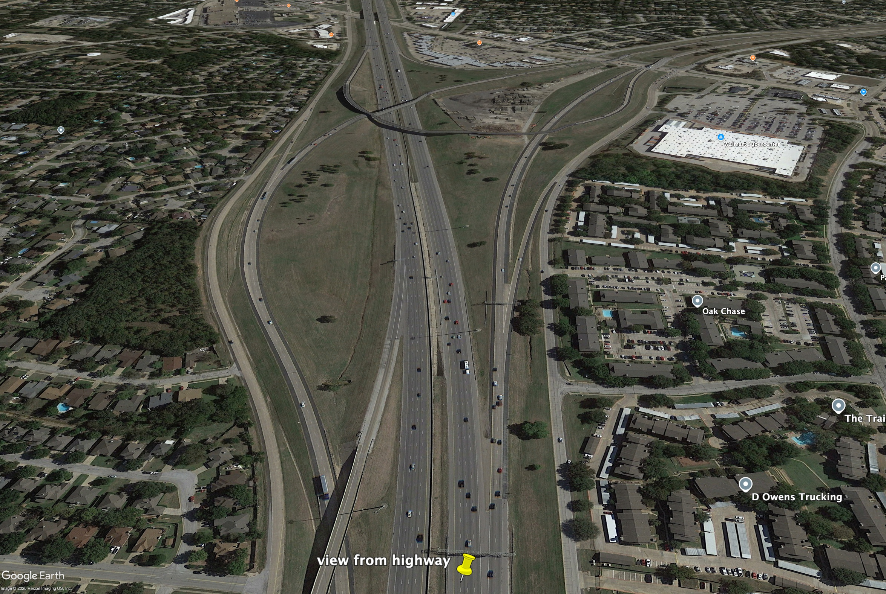
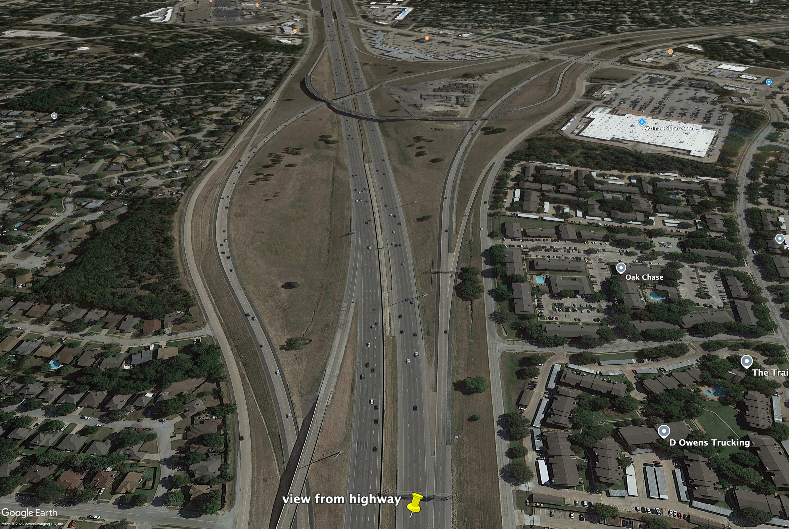
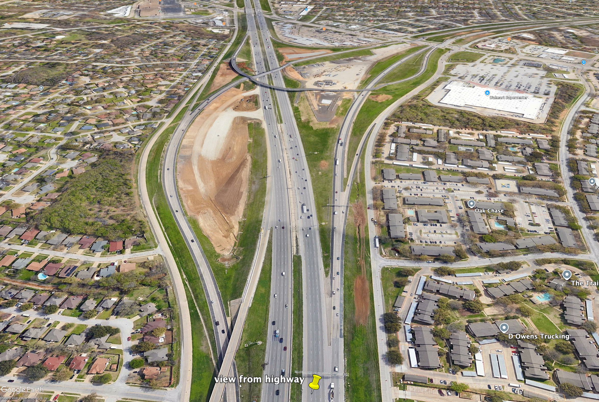
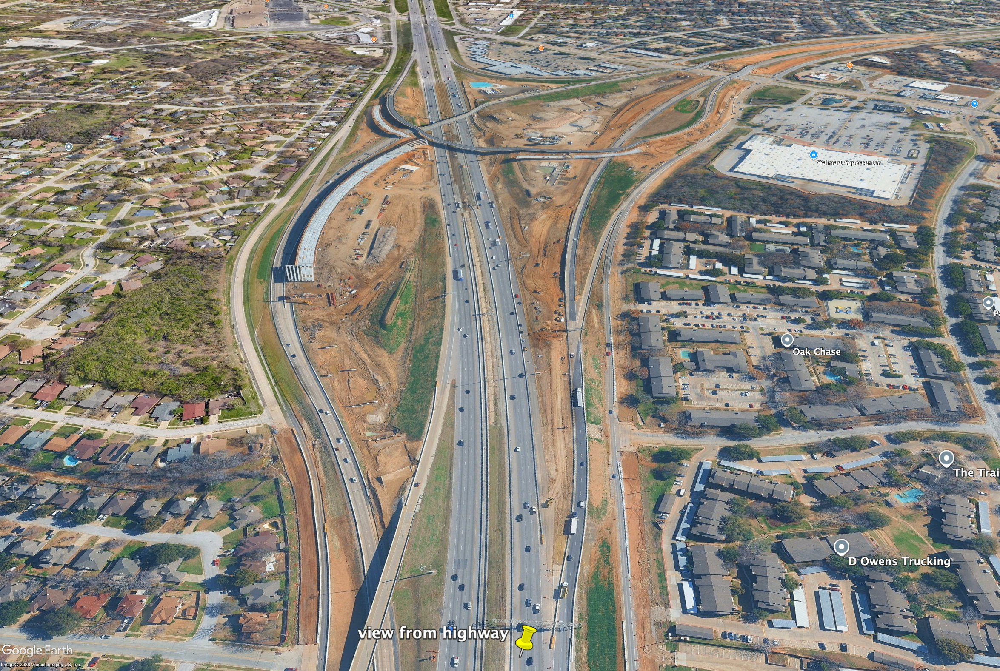
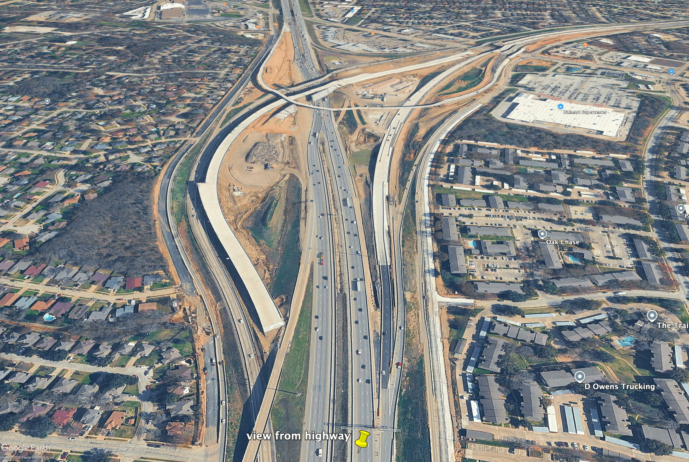
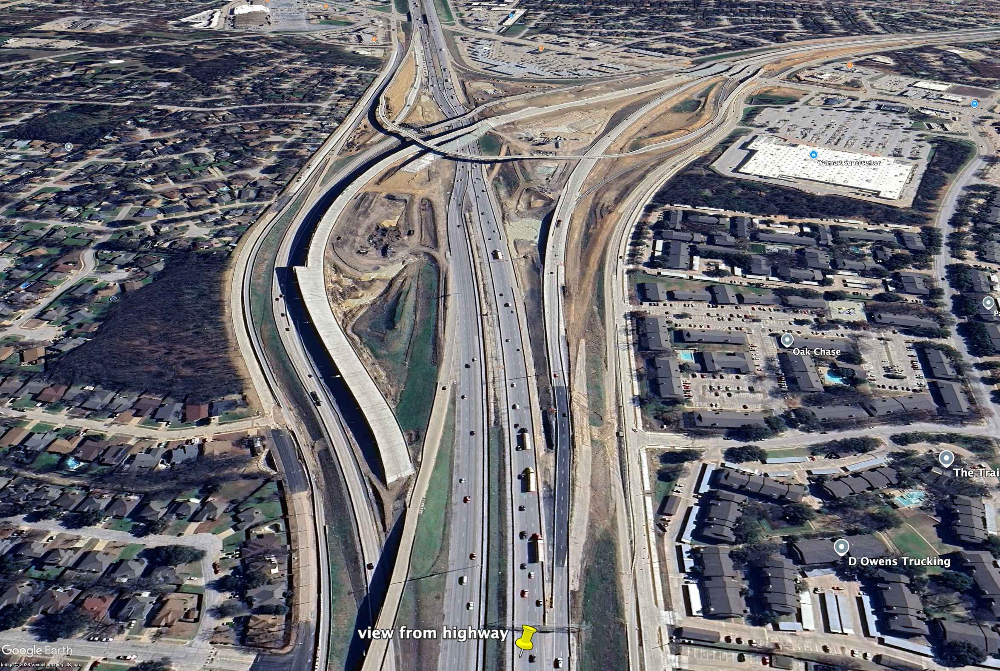
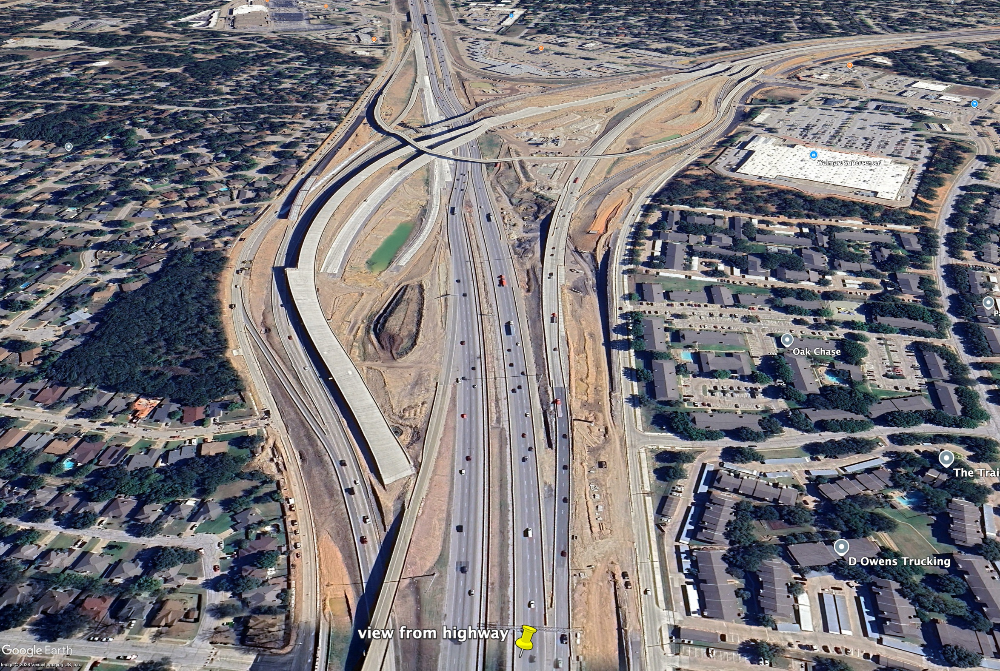
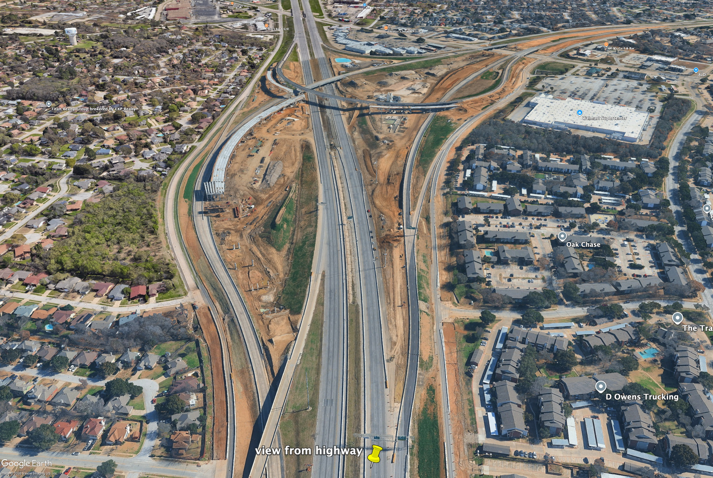

I grew up in the fairly unremarkable suburb of Arlington, TX. I say that not with disdain but actually with
pride--Arlington was a great place to grow up and I look back at my adolescence with a lot of nostalgia. And
only a bit of horror. Arlington back then was a suburb but wasn't really a suburb of Dallas or Fort Worth.
It wasn't similar at all to either and also had an amount of population (about 250,000 back then) that
almost made the word suburban a
misnomer. At least to me. It was a city, just a pretty boring one. It had a cultural district and a downtown
that few would intentionally seek out. The main attractions were the Parks Mall, Six Flags Over Texas and
Hurricane Harbor. But being a teenager in Arlington was awesome. I spent hundreds of hours at the Parks
Mall, spending my hard-earned teenager money at the long-defunct Wet Seal and of course in the food court,
eating
copious amounts of bourbon chicken at Famous Cajun Grill.
While I've visiting Arlington dozens of time since completely leaving in the early 2000s, my visits were
usually constrained to the 2 mile or so radius directly surrounding my parents' house. This was the house I
grew up in. It was beyond familiar. Most visits were boring; each visit would bring new stories of
businesses closing and new ones opening. The small but steady changes in roads and new housing developments
were obvious but never jarring--southwest Arlington, where I grew up, was always growing but the growth felt
steady and manageable.
Something changed maybe 8 or 9 years ago. Or perhaps I just started paying more attention. Regardless of what
the catalyst was in terms of my own awareness, I was definitely made more aware the landscape was changing
at an increasing rate. By that I mean the literal landscape--while driving, I saw more treeless, freshly
leveled patches of clay-colored land for new building and housing developments. I was stuck in and saw more
giants knots of traffic jams. I felt more overall anxiety while driving. But what struck me most visually
was the highways construction. The Dallas-Fort Worth Metroplex is marked by highways and on-ramps and
interchnages everywhere. The very large ones even go by their own name--a "mixmaster" refers to the web of
on-ramps and off-ramps of massive highway exchanges in the Metroplex.
II: More Ramps & Dirt
The Dallas-Fort Worth Metroplex has always had highway projects. But there are several happening right now
that are massive, billion-dollar multi-year projects that literally affect anyone who has to drive anywhere
close to a highway. Of particular note is the project going on in Fort Worth, entering Arlington,
specifically entering Arlington in the Southwest quadrant, where I'm from as I've explained earlier.
The Southeast Connector project is a highway expansion project that will affect 16 miles of highways within
Tarrant County, stretching from central Fort Worth through southwest Arlington and then into parts of Forest
Hill and Kennedale. It started in 2022 and is estimated to finish in 2028. It affects 3 major highways in
the greater Fort Worth area--I-20, I-820 and US 287. The project is part of the Texas Clean Lanes Initiative
with the stated goal of "address[ing] congestion, safety and mobility in the area," according to the Texas
Department of Transportation. The Southeast Connector project will add lanes to all the noted interstates as
well as frontage roads. The budget for this project is approximately 2.2 billion dollars.
"They are completely rebuilding the spaghetti bowl where I-20, I-820, and highway 287 all crash into each
other... expect nightly closures where you're just dumped onto the frontage road. It's an absolute giant."
Tarrant
Infrastructure Dispatch Facebook Group
While I left Arlington over 20 years and have just been a visitor since (and a sometimes fan), life handed
me some lemons and I decided to make figurative lemonade in Arlington, moving back in the summer of 2026 for
the rest of that year, intending to use the time to regroup, heal and chart my next path. But enough of
that. Back to highways.
My mother had vaguely mentioned to me that "there's a lot of construction near the house" and that she hated
driving on highways. But without seeing anything in person, I couldn't appreciate what "construction" truly
meant in terms of a day-to-day commute, or what driving on the highway was now compared to how it was
before. I didn't have any experience of the Southeast Connector project because I didn't live in the
Dallas-Fort Worth Metroplex anymore. Once I moved back, I quickly experience the immense highway project it
was because it affected my commute directly from Fort Worth, where I was staying with a college friend, to
Arlington, where my mother and brothers still lived. The Southeast Connector project was no longer
theoretical, something I read about online via TXDoT report or Fort Worth Star-Telegram articles. It was a
massive imposition on a trip I undertook several times a week. And frankly, it make the journey feel scarier
at times, depending on time of day of my trip.
Every time I would drive from Fort Worth to Arlington and then back again, I would think to myself that
while I knew the area was growing, hundreds of thousands of people had moved to Texas in the past decade as
demonstated by rising property values, etc., that I really had no idea where these new residents of Texas
were coming from. "California" was the answer most of my friends and people in my network would relate. That
was a reasonable assumption. But I became incredibly curious about the where behind all of this
population growth.
I started thinking back to my visits to Arlington, specifically what the highway, 287 merging into the I-20
exchange, looked over the past few years when driving from Fort Worth to Arlington. Using Google Earth
satellite imagery, I pulled several historical
screen captures, attempting to illustrate how the part of highway has evolved over just the past 7 years.
2019: I-20 & 287. While this highway was different from the Arlington highway of my youth, it
looks fairly straightforward. There is no construction.
2022: The Southeast Connector has officially kicked off, though nothing remarkable can be seen in
this image.
2023: Phase 1 overpass routing is starting to become visible.
2023 Update: Later in 2023, central bottlenecks identified in the Southeast Connector proposal
are starting to be addressed.
2024: There are structural bridge layouts starting to take shape.
2025: More construction is visible via concrete stacking.
2025 Update: Later in 2025, auxillary lanes are added.
2026: Construction continues. More on-ramps are visible.








III: Census Data and Texas Migration Inflows
The overwhelming question that came to mind when considering all of this is "Where are people coming from?".
It was clear that people, many people, perhaps millions of people had relocated to Texas. I wasn't even
considering the "why" that is often cited like cheaper cost of living, more jobs, no state income tax,
better economy. I was fixated on a more foundational question -- where are these people from? Or put more
professionally, "when it comes to new Texas residents, what was their initial origin?".
The above chart illustrates migration inflows to Texas from 2019-2024, specifically the top 10 origins per
year. Migration inflows in this context refers to people who move from their prior location 1 year earlier
to Texas. This data was read and parsed directly from the US Census Bureau's excel spreadsheets. Data from
2020 was not available; my assumption is that this is due to the COVID-19 pandemic that was happening at
that time. The data shows that many new Texas residents are actually originating from outside of the United
States. Throughout all years, California, Florida and Louisiana are popular original origins.
While this data answered broadly where people are "coming from" to Texas, I wanted to understand origins on
a deeper level. I wanted to contextualize it what I've been discussing throughout this non-journalism story.
Where were people coming from, and ending up in Tarrant County, or even Arlington? The Census actually
maintains county-to-county migration flows and this data would prove critical is answering this question.
This data was fascinating to me. Growing up in what I considered a boring town, leading a normal adolescent
existence, it never occurred to me that people would intentionally move to Arlington. I had no
choice--instead I had parents that decided were moving from upstate New York to Texas when I was 10 years
old. And that was that. The below simple little map came to mind while parsing this data. It visualizes the
Tarrant County inflows. The orange dot is Arlington.
I speak with nostalgia about Arlington because every time I visit, I am reminded of growing up there, of
being a teenager there. I still feel 16 for a few moments where I'm there. Seeing this data forced me to
confront what Arlington and Tarrant County is right now, not just was 30 years ago. It was very interesting
to see and parse the data and to visualize, however poorly, an evolution of sorts.